Kaamulan Festival: Tribal Revelry in Malaybalay, Bukidnon
Kaamulan stands as one of the Philippines’ most authentic and culturally significant celebrations, deeply rooted in the rich heritage of Bukidnon.
The festival finds its origins in the traditions of the province’s seven indigenous groups—Manobo, Higaonon, Talaandig, Bukidnon, Matigsalug, Umayamnon, and Tigwahanon—each with their own stories, rituals, and histories. The name “Kaamulan,” derived from the Binukid word amul, meaning to gather, reflects the essence of tribal unity and community belonging.
Historically, Kaamulan was not a festival but a sacred gathering.
It was a time for tribes to unite for important life events: offering thanksgiving to deities, performing healing rituals, formalizing peace agreements, initiating courtship rites, or celebrating weddings. These gatherings were marked by traditional chants known as bayok, sacred dances, and the presentation of symbolic objects believed to connect the material world with the spiritual realm.
Today,
Kaamulan continues to honor these roots.
Indigenous
elders lead rituals that have been preserved for generations, allowing visitors to witness the authenticity of Bukidnon’s spiritual life. Handwoven garments, beadwork, earth tones, and rhythmic body movements all form part of a cultural tapestry that speaks of the people’s respect for ancestral spirits and their deep bond with the environment.
Despite the rise of modern technologies and commercial festivals nationwide,
Kaamulan remains steadfast in preserving true
indigenous identity. It is widely recognized as one of the few festivals that retain genuine tribal practices—standing as a powerful reminder of the Philippines’ cultural diversity and the importance of protecting ancestral heritage.


 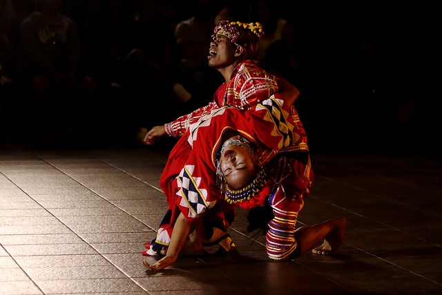
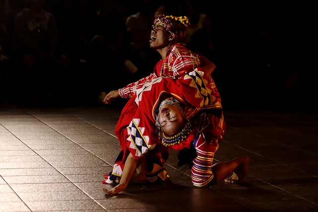
 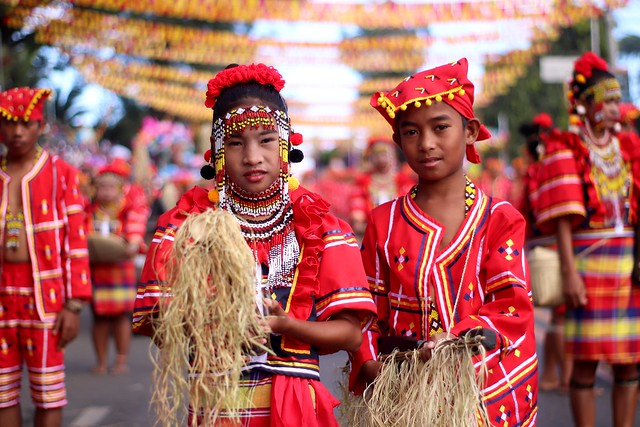
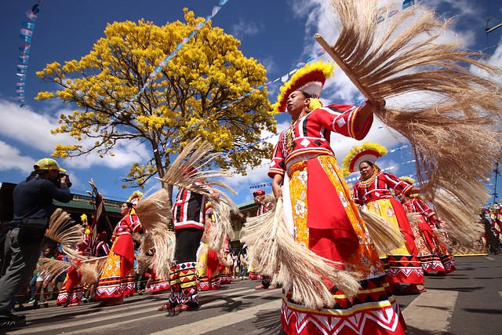
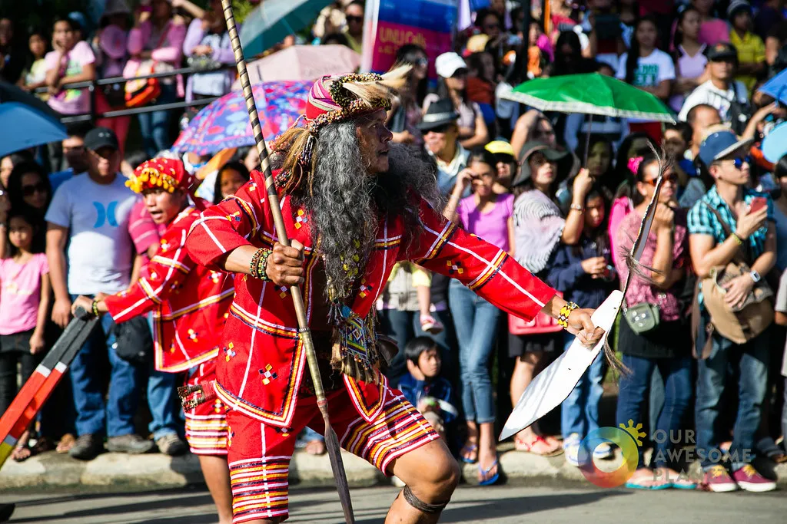
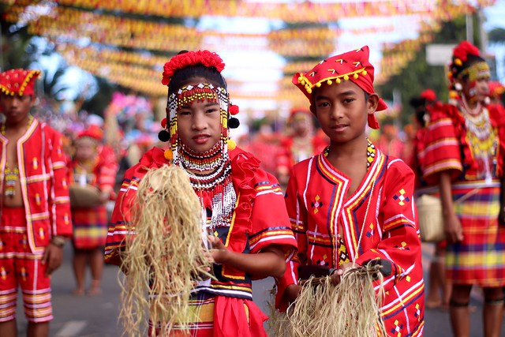
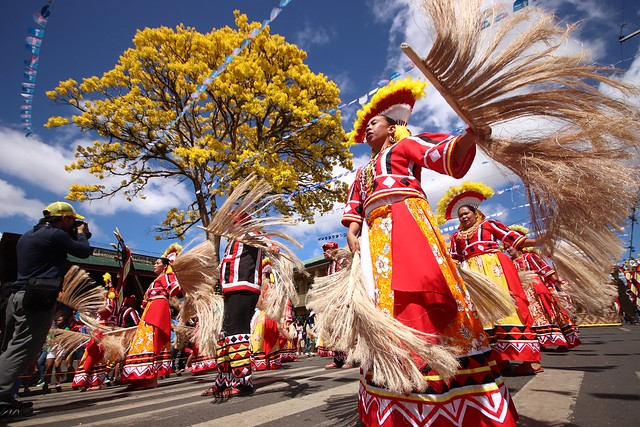
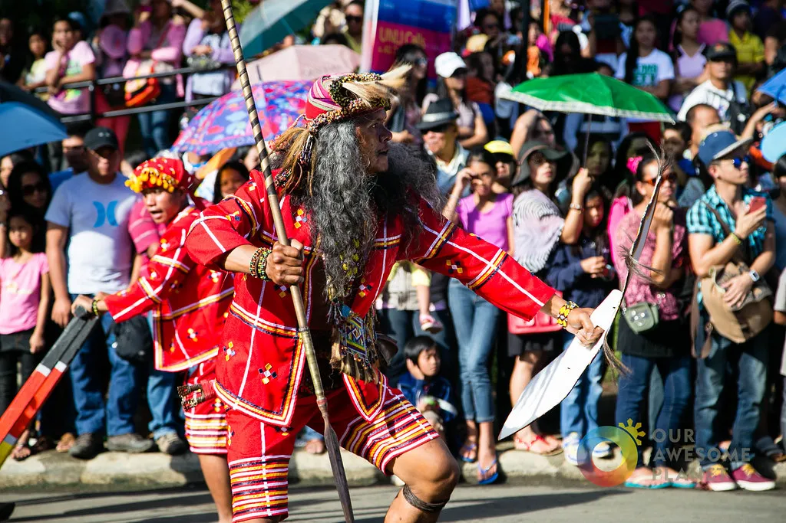
 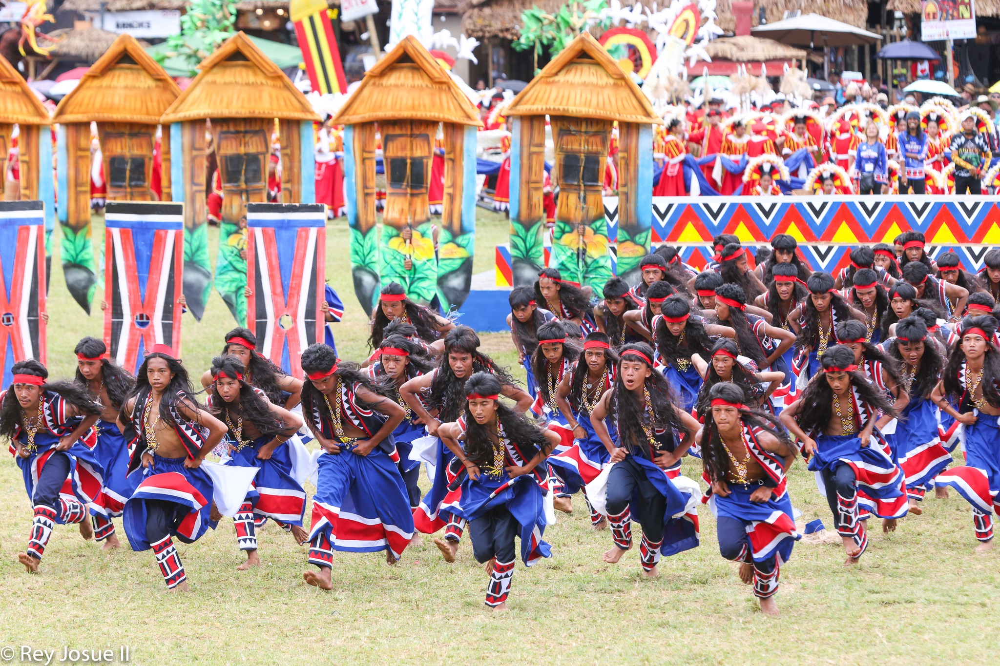
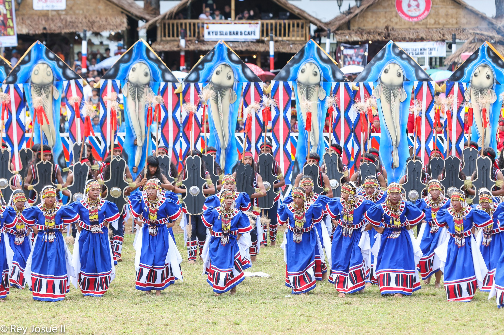
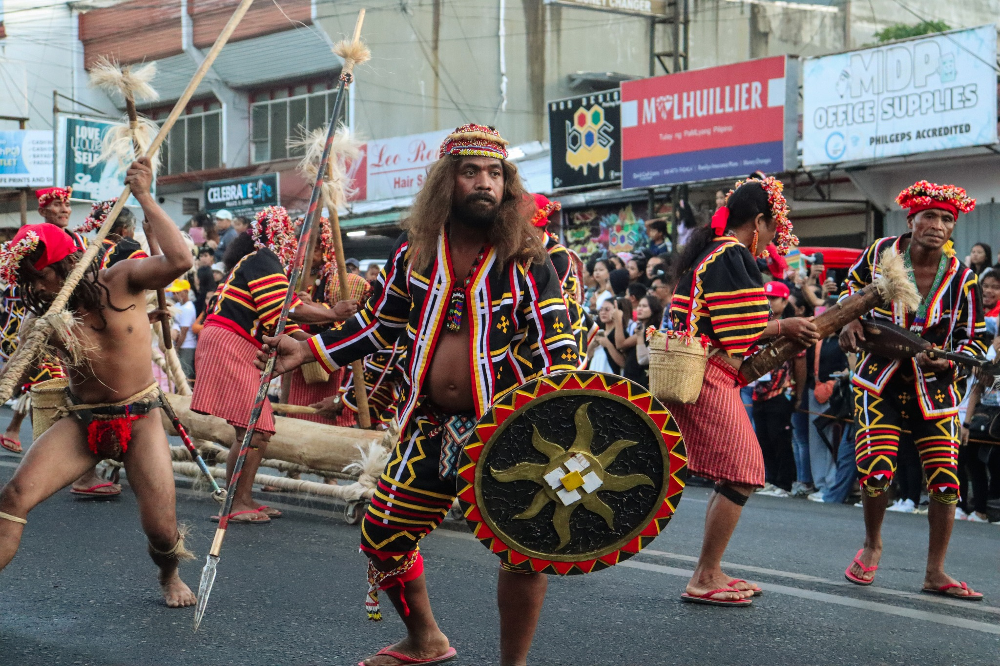
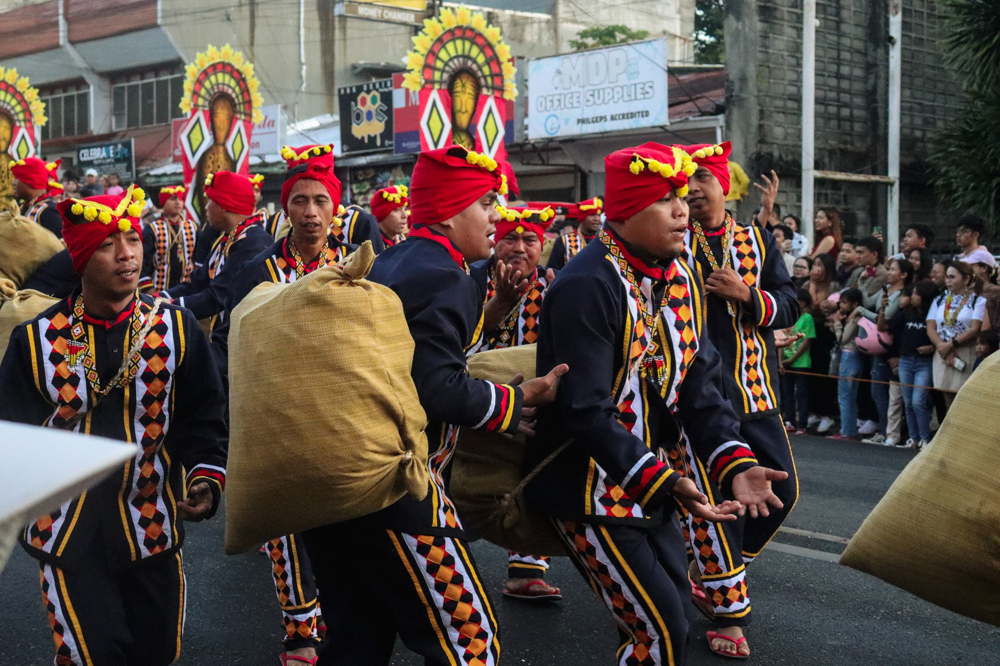
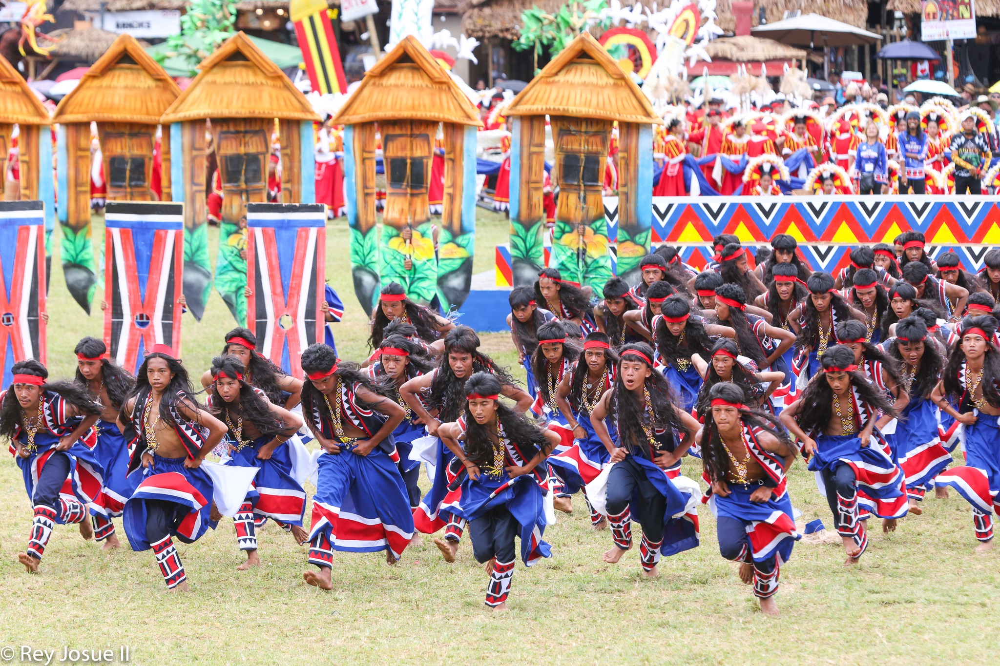
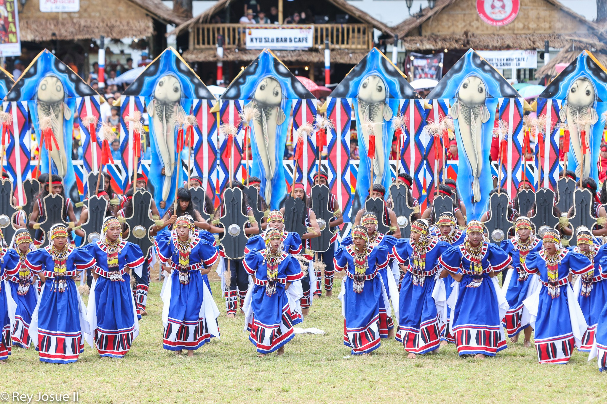
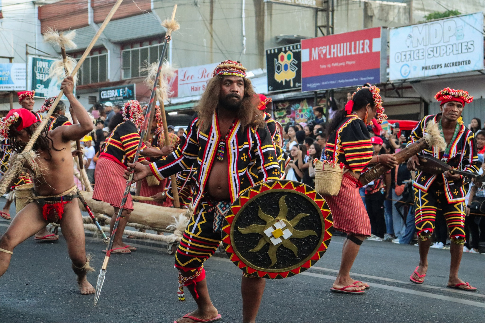
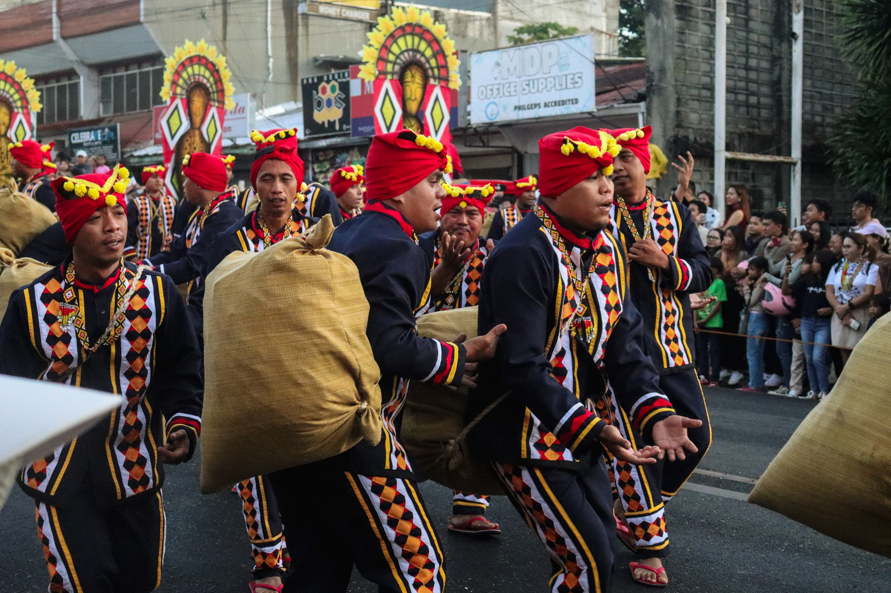